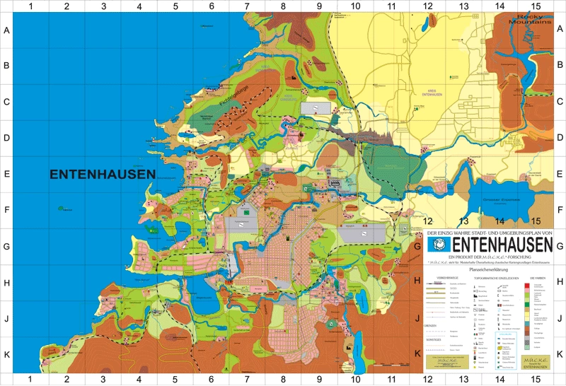

| Name | Entenhausen |
| Formaler Name | ETH |
| Anzahl der Bewohner | ca. 143000 |
| Alter | ca. 124 Jahre |
| Existenzstatus | Vermischt mit AAA |

Entenhausen, die Stadt aus den LTBs, den Lustigen Taschenbüchern, welche Geschichten von variierenden Disney-Figuren aus dem Duck-Kosmos und dem Maus-Kosmos enthalten.
Entenhausen mag wie eine Stadt klingen, ist aber ein Planet mit sprechenden, humanoiden Tieren, ähnlich wie ANM. Die vorherrschenden Familien sind die Tarks und die Mahuses, welche jeweils Enten oder Mäusen ähneln, jedoch mit vielen kleinen spitzen grusligen Zähnen.
Dort ist alles friedlich, eine Welt, ohne Rassismus, Sexismus oder Krieg.
Es gibt viele verschiedene humanoide Tiere, allerdings kommen in NAME HIER EINFÜGEN hauptsächlich Vögel vor, und zwar:
Zudem kommt auch die Schwanzerfackerbande vor, eine Gruppe an Hunden.